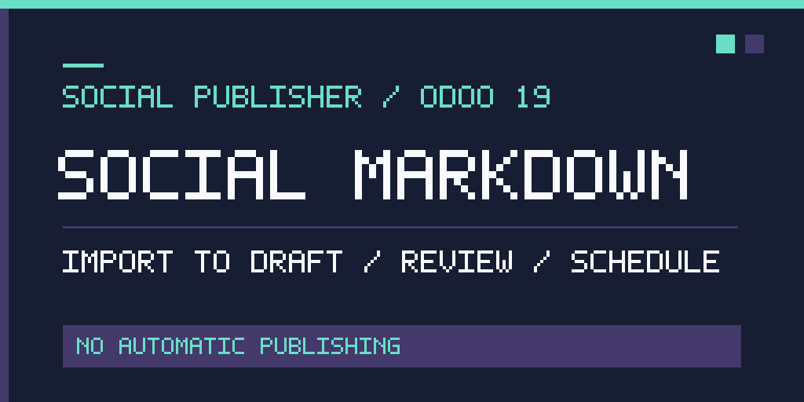

Create a new Social Publisher draft from Markdown or import Markdown into an existing editable post. Review the rendered result before publishing to installed connectors such as LinkedIn or X.
Dependencies: automatify_social and automatify_markdown.
License: LGPL-3
Support: admin@automatify.com.au